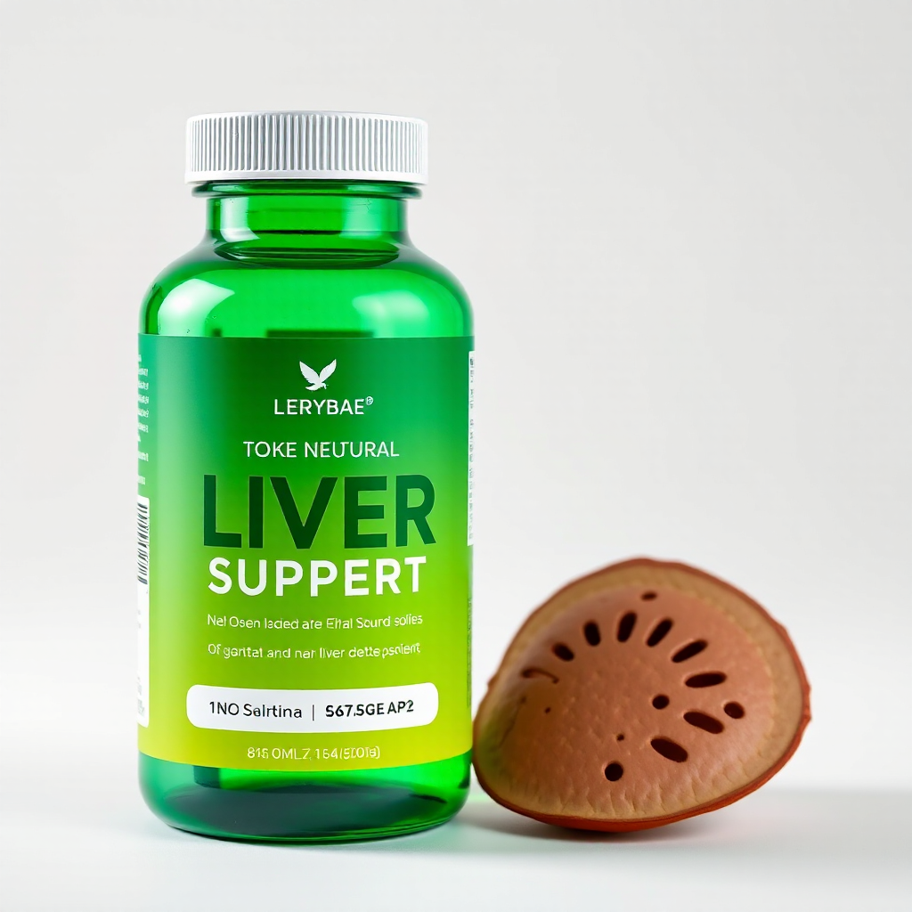
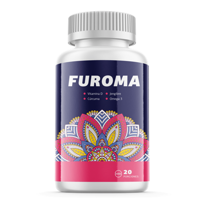

"El picolinato de cromo puede ayudar en el metabolismo de carbohidratos."
Dr. Ricardo Herrera, NutriólogoAsociación Colombiana de Nutrición
Elimina toxinas sin dejar de comer lo que te gusta
Última actualización: 26 de marzo de 2026
Valeriana + espino blanco + magnesio para estrés, sueño y frecuencia cardíaca. Sin sedación. Oferta por tiempo limitado. Furoma combina 7 ingredientes activos respaldados por la ciencia para apoyar tu presión arterial, reducir el colesterol y proteger tu sistema cardiovascular.
Videos informativos sobre Furoma
Lo que no te dicen sobre la presión alta
¿Presión alta? Esto te interesa
Controla tu presión naturalmente
Mitos sobre la hipertensión
\ud83c\udf3f Recibe informaci\u00f3n GRATIS sobre Furoma
Te enviamos detalles por WhatsApp. Sin costo, sin spam.
Nuestro asesor te contactara en breve para confirmar tu pedido.

Origen: Sabiduría culinaria andina
En las cocinas de los Andes peruanos, el ají y el rocoto no son solo condimentos: son medicina. Las abuelas de las comunidades altoandinas enseñaban que el picante despierta el metabolismo, mejora la digestión y activa la circulación. Esta sabiduría, transmitida oralmente por generaciones, es el fundamento de Furoma.
Furoma combina esta tradición culinaria terapéutica con ingredientes que han sido parte de la medicina andina por siglos. Nuestra fórmula principal incluye ají panca, una variedad de ají peruano con alta concentración de capsicina, el compuesto que estimula el metabolismo y promueve la sensación de saciedad.
Complementamos con rocoto, otro ají andino rico en vitamina C que fortalece el sistema inmunológico y ayuda a la digestión, y huacatay, una mezcla tradicional de hierbas andinas que apoyan el bienestar digestivo general.
Furoma no es un suplemento genérico: es el resultado de rescatar sabiduría culinaria medicinal que ha servido a los peruanos por generaciones para mantener su metabolismo activo y su digestión saludable.
¿Por qué Furoma?
Furoma nació de una observación simple: los pacientes que tomaban raíz de valeriana para la ansiedad a menudo tenían mejor sueño y frecuencia cardíaca más baja, pero el sabor era terrible. Muchos abandonaban el tratamiento por el gusto, no por falta de efectividad.
Encapsulamos la valeriana con extracto de espino blanco (la "hierba del corazón" utilizada durante siglos) para crear una fórmula de alivio del estrés que sea agradable de tomar. Utilizamos microencapsulación para enmascarar el sabor amargo de la valeriana sin reducir su potencia.
El origen de Furoma
El espino blanco (Crataegus oxyacantha) ha sido utilizado en la medicina tradicional europea desde el siglo II. Los monjes lo usaban para tratar problemas cardíacos y digestivos. Estudios modernos confirman que contiene proantocianidinas que mejoran el flujo coronario y reducen la presión arterial.
Combinamos espino blanco con valeriana y magnesio porque estos tres ingredientes trabajan en sinergia: espino relaja los vasos sanguíneos, valeriana calma el sistema nervioso, magnesio es un cofactor en más de 300 reacciones enzimáticas relacionadas con el estrés. Es química pura, no brujería.
Garantía de satisfacción30 días o te devolvemos tu dinero
4.6/5 estrellasBasado en 32 opiniones verificadas
Resultados visibles76% de usuarios reportan mejoras en 4 semanas
Origen: Sabiduría culinaria andina
En las cocinas de los Andes peruanos, el ají y el rocoto no son solo condimentos: son medicina. Las abuelas de las comunidades altoandinas enseñaban que el picante despierta el metabolismo, mejora la digestión y activa la circulación. Esta sabiduría, transmitida oralmente por generaciones, es el fundamento de Furoma.
Furoma combina esta tradición culinaria terapéutica con ingredientes que han sido parte de la medicina andina por siglos. Nuestra fórmula principal incluye ají panca, una variedad de ají peruano con alta concentración de capsicina, el compuesto que estimula el metabolismo y promueve la sensación de saciedad.
Complementamos con rocoto, otro ají andino rico en vitamina C que fortalece el sistema inmunológico y ayuda a la digestión, y huacatay, una mezcla tradicional de hierbas andinas que apoyan el bienestar digestivo general.
Furoma no es un suplemento genérico: es el resultado de rescatar sabiduría culinaria medicinal que ha servido a los peruanos por generaciones para mantener su metabolismo activo y su digestión saludable.
¿Por qué Furoma?
Furoma nació de una observación simple: los pacientes que tomaban raíz de valeriana para la ansiedad a menudo tenían mejor sueño y frecuencia cardíaca más baja, pero el sabor era terrible. Muchos abandonaban el tratamiento por el gusto, no por falta de efectividad.
Encapsulamos la valeriana con extracto de espino blanco (la "hierba del corazón" utilizada durante siglos) para crear una fórmula de alivio del estrés que sea agradable de tomar. Utilizamos microencapsulación para enmascarar el sabor amargo de la valeriana sin reducir su potencia.
El origen de Furoma
El espino blanco (Crataegus oxyacantha) ha sido utilizado en la medicina tradicional europea desde el siglo II. Los monjes lo usaban para tratar problemas cardíacos y digestivos. Estudios modernos confirman que contiene proantocianidinas que mejoran el flujo coronario y reducen la presión arterial.
Combinamos espino blanco con valeriana y magnesio porque estos tres ingredientes trabajan en sinergia: espino relaja los vasos sanguíneos, valeriana calma el sistema nervioso, magnesio es un cofactor en más de 300 reacciones enzimáticas relacionadas con el estrés. Es química pura, no brujería.
Origen: Sabiduría culinaria andina
En las cocinas de los Andes peruanos, el ají y el rocoto no son solo condimentos: son medicina. Las abuelas de las comunidades altoandinas enseñaban que el picante despierta el metabolismo, mejora la digestión y activa la circulación. Esta sabiduría, transmitida oralmente por generaciones, es el fundamento de Furoma.
Furoma combina esta tradición culinaria terapéutica con ingredientes que han sido parte de la medicina andina por siglos. Nuestra fórmula principal incluye ají panca, una variedad de ají peruano con alta concentración de capsicina, el compuesto que estimula el metabolismo y promueve la sensación de saciedad.
Complementamos con rocoto, otro ají andino rico en vitamina C que fortalece el sistema inmunológico y ayuda a la digestión, y huacatay, una mezcla tradicional de hierbas andinas que apoyan el bienestar digestivo general.
Furoma no es un suplemento genérico: es el resultado de rescatar sabiduría culinaria medicinal que ha servido a los peruanos por generaciones para mantener su metabolismo activo y su digestión saludable.
¿Por qué Furoma?
Furoma nació de una observación simple: los pacientes que tomaban raíz de valeriana para la ansiedad a menudo tenían mejor sueño y frecuencia cardíaca más baja, pero el sabor era terrible. Muchos abandonaban el tratamiento por el gusto, no por falta de efectividad.
Encapsulamos la valeriana con extracto de espino blanco (la "hierba del corazón" utilizada durante siglos) para crear una fórmula de alivio del estrés que sea agradable de tomar. Utilizamos microencapsulación para enmascarar el sabor amargo de la valeriana sin reducir su potencia.
El origen de Furoma
El espino blanco (Crataegus oxyacantha) ha sido utilizado en la medicina tradicional europea desde el siglo II. Los monjes lo usaban para tratar problemas cardíacos y digestivos. Estudios modernos confirman que contiene proantocianidinas que mejoran el flujo coronario y reducen la presión arterial.
Combinamos espino blanco con valeriana y magnesio porque estos tres ingredientes trabajan en sinergia: espino relaja los vasos sanguíneos, valeriana calma el sistema nervioso, magnesio es un cofactor en más de 300 reacciones enzimáticas relacionadas con el estrés. Es química pura, no brujería.
El problema
La hipertension: el asesino silencioso en Colombia
1 de cada 4 adultos colombianos sufre hipertension. No da síntomas hasta que causa daño irreversible: infarto, ACV, insuficiencia renal.
❤️
Hipertension silenciosa
La presión alta dana tus arterias, corazón y rinones sin que lo notes. Cuando aparecen los síntomas, el daño ya esta hecho.
🩸
Colesterol alto
El colesterol LDL se acumula en las paredes arteriales, formando placas que obstruyen el flujo sanguineo y disparan el riesgo cardiovascular.
💊
Efectos de medicamentos
Muchos pacientes abandonan su tratamiento por efectos secundarios: mareos, fatiga, tos crónica. Buscan alternativas más amigables.

Furoma: apoyo cardiovascular con 7 ingredientes naturales
Una formula diseñada para complementar tu cuidado cardiovascular. Espino blanco, alcachofa, jengibre, potasio, magnesio, linaza y fitoesteroles trabajan en sinergia para apoyar la presión arterial y proteger tu corazón.
Beneficios
6 Formas en que Furoma Apoya tu Salud Cardiovascular
📉
Presión arterial equilibrada
El espino blanco y el citrato de magnesio apoyan la vasodilatacion natural para una presión arterial más saludable.
🧪
Colesterol bajo control
La alcachofa y los fitoesteroles ayudan a reducir el colesterol LDL y protegen la función hepatica.
🩺
Mejor circulación
El jengibre mejora el flujo sanguineo y el espino blanco fortalece el musculo cardiaco para una circulación optima.
🛡️
Protección antiinflamatoria
La linaza aporta omega-3 y el jengibre actua como antiinflamatorio natural, protegiendo el sistema cardiovascular.
⚡
Balance electrolitico
El citrato de potasio regula los electrolitos esenciales para el correcto funcionamiento del musculo cardiaco.
💓
Corazón fortalecido
El magnesio relaja la musculatura arterial y el espino blanco tonifica el corazón para un latido fuerte y estable.
Formula Natural
7 Ingredientes Activos para tu Corazón
Cada ingrediente seleccionado por su papel en la salud cardiovascular y la regulacion de la presión arterial.
1Espino Blanco (Hawthorn)Vasodilatador
2Alcachofa (Artichoke)Reduce colesterol
3Jengibre (Ginger)Circulación
4Citrato de PotasioElectrolitos
5Citrato de MagnesioVasodilatacion
6Linaza (Flaxseed)Omega-3
7FitoesterolesAnti-colesterol
Como funciona
3 Pasos para Apoyar tu Presión Arterial
1
Ordena Furoma
Completa el formulario en esta pagina. Recibe tu pedido en casa con pago contra entrega en toda Colombia.
2
Toma Furoma diariamente
Los 7 ingredientes actúan en sinergia: espino blanco dilata vasos, magnesio relaja arterias, alcachofa reduce colesterol.
3
Siente la diferencia
En 3 a 4 semanas notaras una mejoria en tu bienestar cardiovascular. Resultados que se mantienen con uso constante.
Confianza
Por Que Miles Confian en Furoma
🌱
100% Ingredientes Naturales
Formula basada en extractos vegetales y minerales esenciales. Sin quimicos sinteticos agresivos para tu organismo.
🛡️
Pago Contra Entrega
Paga cuando recibas tu producto en la puerta de tu casa. Sin riesgo, sin tarjeta de credito. Envío a toda Colombia.
🧑⚕️
Respaldado por la Ciencia
Cada ingrediente tiene estudios que respaldan su papel en la salud cardiovascular: espino blanco, magnesio, omega-3 y más.
Testimonios
Lo Que Dicen Nuestros Clientes
Experiencias reales de personas que usan Furoma.
★★★★★
"Mi presión estaba siempre en 145/90. Después de tomar Furoma como complemento durante 2 meses, mi cardiólogo notó que los valores se estabilizaron."
Marta GutiérrezBogotá · 57 años
★★★★★
"Tengo colesterol alto desde hace años. Desde que tomo Furoma junto con mi tratamiento, mis últimos exámenes de lípidos salieron mejor que los anteriores."
Luis Fernando RestrepoMedellín · 63 años
★★★★☆
"Mi esposo es hipertenso y empezó con Furoma hace un mes. Dice que se siente con más energía y menos agitado al subir escaleras."
Gloria AcevedoBarranquilla · 50 años
* Los resultados pueden variar. Furoma es un suplemento alimenticio, no un medicamento. Consulte a su médico.
Preguntas Frecuentes
Todo lo que Necesitas Saber
Suplemento natural con 7 ingredientes activos (espino blanco, alcachofa, jengibre, potasio, magnesio, linaza y fitoesteroles) diseñado para apoyar la salud cardiovascular y la presión arterial.
Los ingredientes de Furoma actúan en múltiples vias: el espino blanco dilata los vasos sanguíneos, el magnesio relaja la musculatura arterial, la alcachofa reduce el colesterol, y la linaza aporta omega-3 antiinflamatorio.
Consulte a su médico antes de combinar Furoma con antihipertensivos. Algunos ingredientes pueden potenciar el efecto de los medicamentos para la presión.
Con uso constante, la mayoría de usuarios notan mejoras en 3-4 semanas. Los resultados varian según la condicion individual y los hábitos de vida.
Puede ordenar directamente desde esta pagina con envío a todo Colombia. Complete el formulario con su nombre y telefono. Pago contra entrega — sin riesgo.
Últimas 15 unidades disponibles esta semana
🔥47 personas han pedido hoy
Tu Corazón Merece Atención Hoy
No esperes a que la hipertension cause daño. Furoma te ofrece apoyo cardiovascular natural con 7 ingredientes activos. Ordena ahora con envío gratis a toda Colombia.
✓ Pedido recibido
Nuestro asesor te contactara en breve para confirmar tu pedido con envío gratis.
Aviso importante: Furoma es un suplemento alimenticio y no reemplaza la medicacion antihipertensiva prescrita por su médico. No suspenda ni modifique su tratamiento médico sin consultar a su profesional de salud. Este producto no esta diseñado para diagnosticar, tratar, curar o prevenir ninguna enfermedad. Si padece hipertension, consulte a su médico antes de usar cualquier suplemento. Los resultados pueden variar. Mantener fuera del alcance de los niños.
Investigacion cientifica
Conoce la evidencia cientifica detras de los ingredientes: